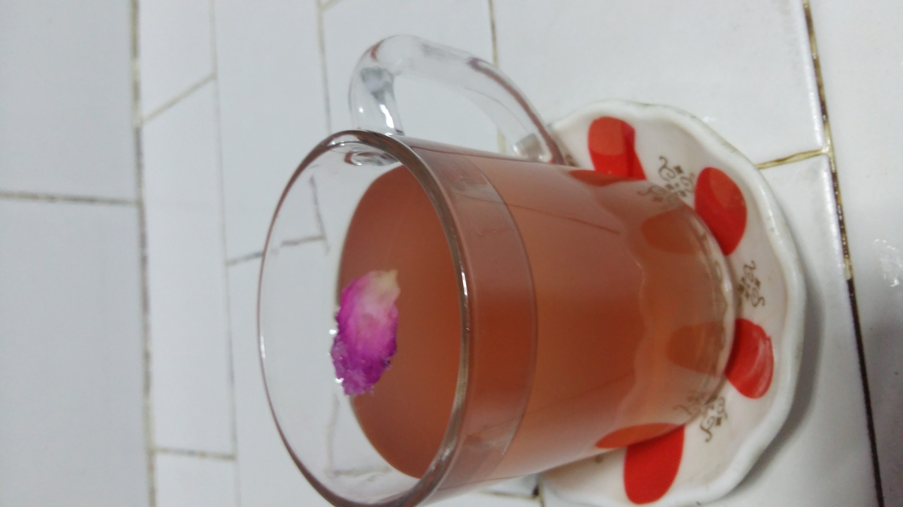
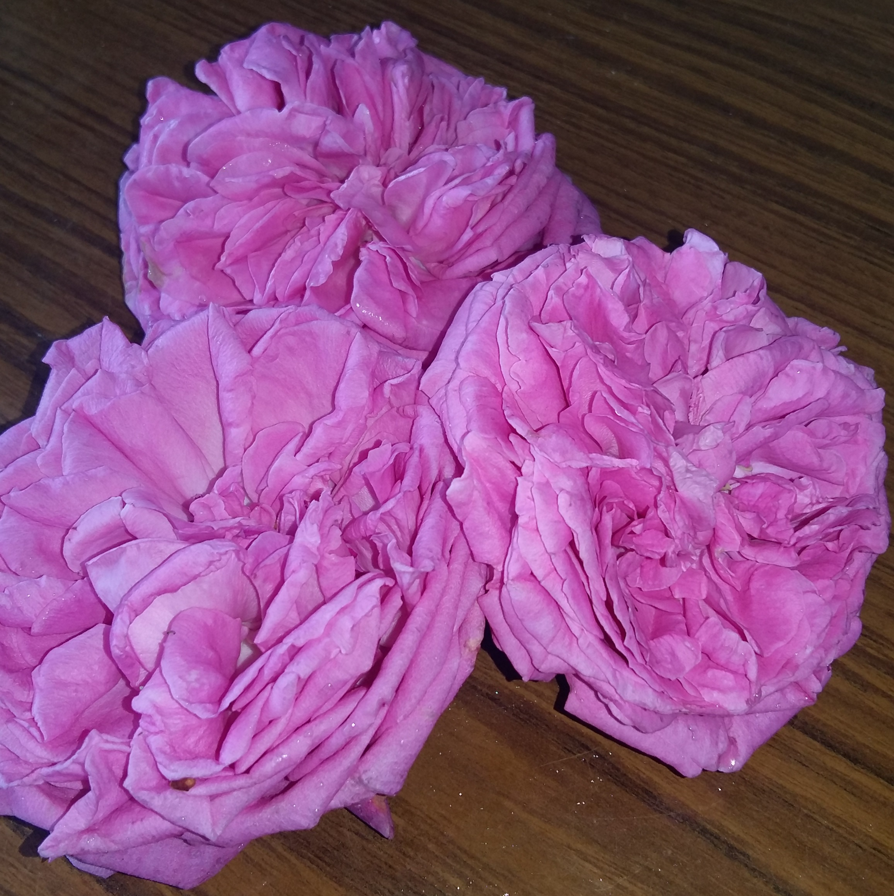

Osmanlı Gül Şerbeti
Çok az malzeme ile yapabileceğiniz
Osmanlı gül şerbet tarifini öğrenmek için okumaya devam edin.
Malzemeler
-
4 yemek kaşığı gül reçeli
-
1 su bardağı su
Yapılışı
-
Suya reçel eklenir ve reçel eriyene kadar karıştırılır.
-
Buzdolabında soğutulmuş şekilde servis edilir.
Afiyet Olsun

